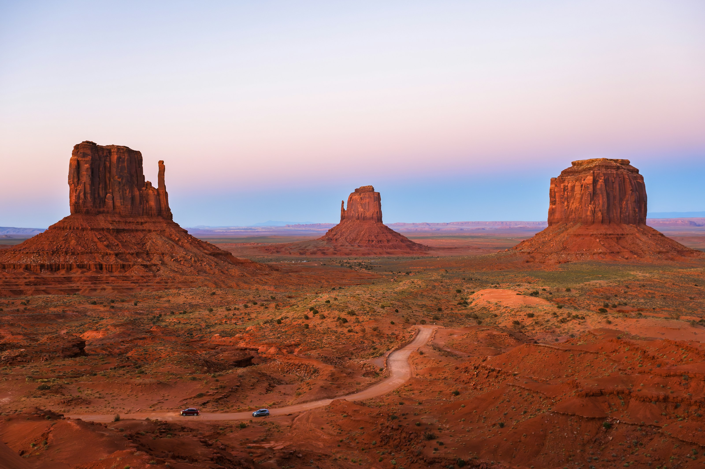

World Banking system awards winner
Portale is a relocation card designed for people starting life abroad. Open remotely, spend instantly, exchange currencies fairly, and arrive already connected.
Next section